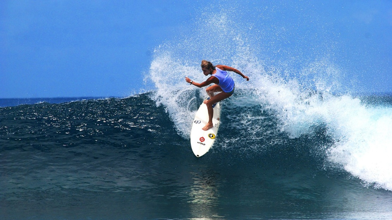

Como começou o surf feminino profissional no Brasil
 A nossa primeira surfista profissional veio somente depois de 50 anos, foi em 1980 que Brigitte Mayer começou a competir, brasileira de Maricá no Rio de Janeiro, surfava com as irmãs, onde uma incentivava a outra. Foi a primeira surfista brasileira a disputar uma etapa do Circuito Mundial em 1990, assim se tornando ”profissional”, pois no Brasil ainda não existia circuito feminino profissional, somente amador e por isto ela ficou 2 anos sem competir, para poder voltar ao amador e competir dentro do Brasil. Conquistou o seu pódio como campeã brasileira aos 30 anos de idade e competiu até os 40. Abrindo portas para muitas outras mulheres no cenário do surf feminino, ela recentemente se tornou a primeira mulher presidente da Associação de Surfe Profissional (ASP).